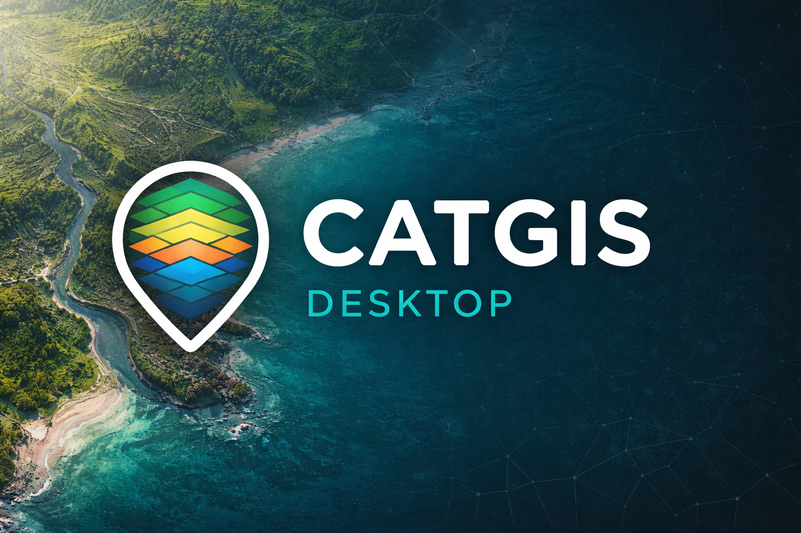

Segunda edicion institucional
Documento tecnico de referencia para instalacion, uso diario, topografia y composicion cartografica.
Beta final funcional
CATGIS Desktop
Manual de Usuario - Segunda edicion
Guia profesional de instalacion, entorno de trabajo, gestion de datos, topografia, servicios online y salida cartografica, ampliada con anexos operativos de uso diario.
- 1.Presentacion
- 2.Estado de la version
- 3.Instalacion
- 4.Primer inicio y entorno de trabajo
- 5.Gestion de proyectos y datos
- 6.Visualizacion y navegacion
- 7.Capas y simbologia
- 8.Servicios y datos online
- 9.Edicion y herramientas de trabajo
- 10.Topografia y modelos de elevacion
- 11.Composicion cartografica
- 12.Ayuda integrada
- 13.Buenas practicas operativas
- 14.Cierre
- A.Anexo - Inicio rapido en 15 minutos
- B.Anexo - Problemas frecuentes y resolucion inicial
- C.Anexo - Atajos y acciones rapidas
- D.Anexo - Matriz operativa de formatos y flujos
Criterio editorial de esta edicion
Se documentan exclusivamente funciones auditadas en el proyecto actual: instalador Windows, carga de datos local y online, edicion vectorial, topografia, perfiles, compositor cartografico, ayuda integrada e interfaz bilingue. La segunda edicion agrega anexos practicos para acelerar adopcion y soporte operativo.
CATGIS Desktop es una aplicacion GIS de escritorio para Windows orientada a trabajo tecnico diario. Reune en una misma interfaz tareas de carga de datos, visualizacion, edicion vectorial, servicios web geograficos, topografia, modelos de elevacion y composicion cartografica.
Proposito del sistema
- Concentrar operaciones GIS frecuentes sin depender de varias herramientas dispersas.
- Brindar una base profesional para capas vectoriales, raster, servicios remotos y mapas finales.
- Dar continuidad entre mapa de trabajo, analisis tecnico y salida cartografica.
Perfil de usuario
- Tecnicos GIS y cartografos.
- Usuarios que integran mapas base, servicios web, DEM y capas propias.
- Equipos que necesitan entregar productos cartograficos desde un escritorio Windows.
Alcance general de esta edicion
La presente guia cubre los flujos principales ya disponibles en la aplicacion: instalacion mediante asistente, interfaz bilingue, carga de capas, servicios WMS/WFS, origenes PostGIS y GeoPackage, edicion vectorial, snapping, topografia, perfiles y compositor cartografico.
La distribucion actual de CATGIS Desktop se entrega como una beta final funcional. Esto significa que la aplicacion ya dispone de un bloque funcional principal cerrado para esta etapa, con presentacion profesional y validacion tecnica suficiente para distribucion controlada.
Lectura recomendada antes de operar
- La interfaz y el flujo principal son estables para validacion y uso tecnico controlado.
- La firma digital del instalador queda pendiente para una etapa comercial posterior.
- En equipos con Smart App Control o politicas Windows restrictivas, el instalador sin firma puede ser bloqueado.
Funciones auditadas como disponibles
- Instalador Windows con asistente, licencia y runtime Java embebido.
- Eleccion de idioma inicial durante la instalacion y cambio posterior desde Ayuda.
- Carga de multiples archivos, recordatorio de ultima carpeta y confirmacion con Enter en dialogos principales.
- Topografia con DEM online, DEM local, curvas de nivel y perfil topografico.
- Compositor cartografico con exportacion a imagen, PDF e impresion.
Proyeccion razonable de evolucion
- Mayor cobertura documental ilustrada.
- Profundizacion de etiquetado y salidas cartograficas.
- Ampliacion de herramientas de topografia y perfiles.
- Mayor refinamiento de modulos y mensajes contextuales.
CATGIS Desktop se distribuye como un instalador .exe real para Windows. El paquete instala la aplicacion en Program Files, crea accesos directos y ya incluye el runtime Java necesario; el usuario final no necesita instalar Java por separado.
Instalador recomendado: CATGIS Desktop-1.0.0.exe
Procedimiento paso a paso
- Ejecute el instalador
.exe. - Lea y acepte la licencia de instalacion mostrada por el asistente.
- Elija el idioma inicial de la aplicacion: Espanol o English.
- Confirme la carpeta de instalacion. La ubicacion sugerida es
C:\Program Files\CATGIS Desktop. - Active el acceso directo de escritorio si desea un acceso rapido.
- Complete la instalacion y ejecute CATGIS desde el asistente, el escritorio o el menu inicio.
Aspectos operativos del instalador
| Elemento | Comportamiento actual |
|---|
| Licencia | Se muestra dentro del asistente y aclara el caracter de beta final funcional sin firma digital. |
| Idioma inicial | Se guarda durante la instalacion como preferencia inicial de la aplicacion. |
| Runtime Java | Ya viene embebido en la distribucion instalada. |
| Accesos directos | Escritorio y menu inicio, segun seleccion del asistente. |
| Firma digital | Permanece pendiente para una etapa comercial posterior; algunos equipos pueden bloquear el instalador por esta ausencia. |
Estado de release
La instalacion identifica esta edicion como beta final funcional. Es una salida lista para validacion y distribucion controlada, pero no debe presentarse aun como release comercial firmada para cualquier equipo Windows.
Al abrir CATGIS Desktop se presenta un entorno dividido en un gestor de proyecto a la izquierda y una vista de mapa al centro. En el primer arranque del proyecto actual, la aplicacion solicita el CRS inicial del proyecto.
Primer arranque recomendado
- Abra CATGIS Desktop desde el acceso directo o el menu inicio.
- Seleccione el CRS inicial del proyecto cuando aparezca el dialogo correspondiente.
- Verifique la ventana principal: menu superior, toolbars, panel de capas, mapa y barra de estado.
- Confirme el nombre del proyecto y el CRS en el titulo de la ventana.
Bloques principales de la interfaz
- Menu principal: Archivo, Edicion, Vista, Herramientas, Cartografia, Modulos, Proyecto, Ventana y Ayuda.
- Toolbars: herramientas principales, cartografia, topografia, conexiones online y edicion flotante.
- Gestor de proyecto: orden y control visual de capas.
- Vista de mapa: exploracion, edicion y analisis visual.
- Barra de estado: coordenadas, CRS y mensajes operativos.
Regla visual del panel de capas
- Las capas ubicadas arriba se dibujan por delante.
- Las capas ubicadas abajo quedan al fondo.
- Doble clic sobre una capa: zoom a la capa.
- Clic izquierdo sobre el check: visible / oculta.
- Arrastre en la lista: reordenamiento de dibujo.
Idioma de la interfaz
CATGIS es bilingue en esta etapa. Puede cambiar el idioma desde Ayuda > Idioma / Language. Para ver el cambio en toda la interfaz, se recomienda reiniciar la aplicacion.
CATGIS maneja proyectos .catgis y admite un conjunto amplio de datos locales, servicios y flujos tabulares. Los dialogos principales recuerdan la ultima carpeta usada y permiten cargar varios archivos cuando el flujo lo admite.
Operaciones de proyecto
Archivo > Nuevo proyecto / Abrir proyecto / Guardar proyecto / Guardar proyecto como...
- Nuevo proyecto: crea un espacio limpio de trabajo.
- Abrir proyecto: reconstruye capas y configuraciones guardadas.
- Guardar proyecto: conserva orden de capas, metadatos y configuraciones relevantes.
- Salvar vista del mapa: exporta la vista actual del mapa como imagen.
Carga local de datos
Archivo > Agregar capa
Como cargar una o varias capas
- Abra Archivo > Agregar capa.
- Seleccione el tipo o deje Todos los soportados.
- Use Buscar... y elija uno o varios archivos.
- Confirme con Aceptar o presione Enter.
- Revise que las capas aparezcan en el gestor de proyecto y en la vista de mapa.
Formatos principales auditados en esta edicion
| Bloque | Formatos / origenes |
|---|
| Vectores locales | SHP, GeoPackage, GeoJSON, KML y DXF. |
| Raster | TIF, TIFF, IMG, ASC y raster de imagen compatibles en el flujo general. |
| Tablas y puntos | Importacion de tabla de puntos; el sistema incorpora soporte tabular y fuentes CSV dentro de la arquitectura actual. |
| Servicios / BD | WMS, WFS, GeoPackage estructurado y PostGIS. |
Recomendacion operativa
Si trabaja con un conjunto numeroso de archivos, incorpore primero las capas base, luego las capas tematicas y finalmente ordene el dibujo desde el panel izquierdo antes de pasar a simbologia o cartografia.
La vista de mapa es el espacio principal de analisis y edicion. CATGIS incorpora herramientas de zoom, navegación entre vistas, encuadre de capas y lectura de coordenadas en la barra de estado.
Herramientas de navegacion
- Zoom +
- Zoom -
- Zoom a capa seleccionada
- Zoom a todas las capas
- Vista anterior / Vista siguiente
Barra de estado
- Muestra coordenadas del cursor.
- Expone el CRS activo del proyecto.
- Presenta coordenadas decimales y DMS en la etapa actual.
- Publica mensajes operativos de la herramienta en uso.
Secuencia de navegacion recomendada
- Cargue las capas del proyecto.
- Use Zoom a todas las capas para obtener un encuadre general.
- Seleccione una capa y aplique Zoom a capa seleccionada para revisar detalle.
- Utilice Vista anterior y Vista siguiente para volver sobre exploraciones previas.
CRS del proyecto
El CRS se define al inicio y queda visible en el titulo de la ventana. Si un flujo necesita control especifico de referencia espacial, CATGIS utiliza ese marco como contexto principal de trabajo.
CATGIS permite trabajar con simbologia simple por capa y simbologia por campo para categorias, especialmente en capas de lineas y poligonos. La leyenda cartografica toma esa representacion para el compositor.
Cartografia > Simbologia de capa seleccionada... / Simbologia por campo...
Gestion visual de capas
- Active o desactive capas con el check de la lista.
- Reordene capas para controlar el apilamiento de dibujo.
- Abra la tabla de atributos para inspeccion o control.
- Use el menu contextual de la capa para acciones complementarias.
Como aplicar simbologia por campo
- Seleccione una capa de lineas o poligonos en el panel izquierdo.
- Abra Cartografia > Simbologia por campo....
- Elija el campo categorico que desea usar.
- Genere las categorias y revise colores/estilos resultantes.
- Confirme y verifique el cambio en el mapa y posteriormente en la leyenda del compositor.
Persistencia
En la base actual del proyecto, las configuraciones de simbologia utilizadas por el flujo cartografico se guardan junto con el proyecto y se reconstituyen al reabrirlo dentro del alcance implementado.
CATGIS integra mapas base online en una toolbar dedicada y mantiene soporte para servicios WMS, WFS y origenes PostGIS dentro de la arquitectura actual.
Conexiones online visibles
- OSM: activa OpenStreetMap.
- Esri: activa Esri World Imagery.
- Mapas... abre el catalogo de mapas base.
- WMS: agrega un servicio WMS.
Fuentes estructuradas y avanzadas
- WFS: carga feature types remotos en modo lectura.
- GeoPackage: permite flujos estructurados desde archivo.
- PostGIS: conecta una base PostgreSQL/PostGIS, lista tablas espaciales y las incorpora al proyecto.
Como agregar un WMS
- Use el boton WMS en la toolbar de conexiones online.
- Ingrese la URL base del servicio.
- Conecte, seleccione una o mas capas y el CRS de trabajo.
- Agregue la capa al proyecto y verifique el dibujo en el mapa.
Como incorporar un origen PostGIS
- Abra el flujo de PostGIS desde el bloque correspondiente del sistema.
- Complete host, puerto, base, usuario y clave.
- Pruebe la conexion y liste tablas espaciales.
- Seleccione una o varias capas y carguelas al proyecto.
Observacion de alcance
En la etapa actual, algunas conexiones avanzadas se cargan en modo lectura para privilegiar estabilidad operativa y trazabilidad del proyecto.
CATGIS integra un bloque de edicion vectorial con guardado de cambios, mover seleccion, corte, unir vertices, deshacer, rehacer y herramientas de apoyo CAD para lineas, rectangulos, circulos y operaciones relacionadas.
Edicion > herramientas de seleccion, guardado y CAD
Funciones de edicion auditadas
- Cortar, copiar, pegar y borrar seleccion.
- Deshacer y rehacer ediciones.
- Mover seleccion.
- Cortar geometria y unir vertices.
- Guardar cambios de edicion, terminar o cancelar.
Bloque CAD auditado
- Continuar linea.
- Rectangulo.
- Circulo y circulo por 3 puntos.
- Extender o acortar linea.
- Paralela / desplazamiento lateral.
- Perpendicular.
Flujo basico de edicion recomendado
- Seleccione la capa editable o cree una nueva capa vectorial.
- Active SNAP si necesita ajuste preciso a vertices o segmentos.
- Use la herramienta de dibujo o CAD correspondiente.
- Revise la geometria en el mapa.
- Guarde cambios de edicion antes de cerrar o cambiar de bloque.
Snapping
El snapping mejora la precision geometrica cuando se trabaja con nodos existentes, intersecciones o continuidad de trazas. Conviene activarlo antes de digitalizar o ajustar entidades vinculadas entre si.
El bloque topografico dispone de una toolbar especifica con accesos directos a Imagen DEM, Cargar DEM, Curvas de nivel y Perfil topografico. Los DEM cargados localmente o descargados online alimentan el mismo flujo operativo.
Toolbar Topografia > Imagen DEM / Cargar DEM / Curvas de nivel / Perfil topografico
DEM online
CATGIS dispone de un flujo simplificado de descarga DEM. La opcion publica por defecto utiliza Terrain Tiles sin exigir clave; OpenTopography queda como camino avanzado cuando se necesita esa fuente y se dispone de API key.
Como descargar un DEM online
- Pulse Imagen DEM.
- Elija la fuente DEM y el dataset.
- Use Usar vista actual para completar el area de descarga.
- Revise el resumen tecnico de cobertura y tamano estimado.
- Defina el archivo de salida y confirme Descargar e incorporar.
DEM local
La entrada Cargar datos DEM permite incorporar modelos de elevacion desde archivo. En la etapa actual se audito soporte real para GeoTIFF/TIFF, ERDAS IMG y Arc/Info ASCII Grid (*.asc).
Como cargar un DEM local
- Pulse Cargar DEM o abra Archivo > Cargar datos DEM....
- Seleccione uno o varios archivos compatibles.
- Confirme la apertura.
- Verifique que el DEM se agregue como raster del proyecto.
Curvas de nivel
Como generar curvas de nivel
- Con un DEM cargado, pulse Curvas de nivel.
- Seleccione el raster origen.
- Defina la equidistancia.
- Defina la repeticion de curva indice.
- Asigne el nombre de capa resultante y elija si desea simplificar o suavizar lineas.
- Genere la capa y revise la salida en el mapa.
La salida actual normaliza campos tecnicos para trabajar cartograficamente, incluida la elevacion y el tipo de curva. La simbologia distingue curvas indice e intermedias dentro del flujo actual.
Perfil topografico
Como generar un perfil topografico
- Con un DEM activo, pulse Perfil topografico.
- Seleccione el raster DEM si hay mas de uno.
- Defina la cantidad de muestras del perfil.
- Elija la linea del perfil: Usar linea seleccionada o Capturar polilinea.
- Genere el perfil y revise distancia, minimo, maximo, inicio, fin y muestras validas.
- Si lo necesita, exporte a PNG o pulse Agregar al compositor....
Capacidades actuales del grafico de perfil
- Control de lineas guia del eje X y eje Y.
- Eleccion del color de la linea del perfil.
- Exportacion del perfil a PNG.
- Envio directo del perfil al compositor cartografico como imagen adicional del layout.
El compositor cartografico permite producir una salida final desde la vista actual, con elementos como leyenda, norte, escala, cartucho y, en esta etapa, una imagen adicional para perfil topografico o grafico tecnico.
Cartografia > Abrir compositor cartografico...
Como abrir y preparar una composicion
- Abra el compositor desde el menu Cartografia.
- Revise el layout propuesto y la configuracion lateral.
- Defina pagina, escala, leyenda, norte y cartucho segun el objetivo del mapa.
- Mueva o redimensione los elementos directamente sobre el layout.
- Exporte a imagen o PDF, o imprima la composicion final.
Elementos cartograficos disponibles
- Mapa principal.
- Grilla y etiquetas de grilla.
- Leyenda configurable.
- Simbolo de norte.
- Escala grafica o tecnica.
- Cartucho y metadatos.
- Imagen de perfil / grafico adicional.
Salidas
- Exportar imagen.
- Exportar PDF.
- Imprimir.
- Persistencia de la imagen de perfil en el proyecto dentro del alcance implementado.
Como insertar un perfil topografico en el layout
- Genere el perfil topografico desde el bloque DEM.
- En el dialogo del perfil, pulse Agregar al compositor....
- Se abrira el compositor con la imagen del perfil cargada en el layout.
- Mueva y redimensione el bloque Imagen de perfil / grafico.
- Exporte o imprima el mapa tecnico final con planta y perfil.
Uso tecnico recomendado
Este flujo resulta especialmente util para mapas de conduccion, trazas lineales, perfiles de terreno o laminas donde el perfil vertical acompana la planta principal.
CATGIS incorpora un menu Ayuda con soporte integrado al usuario. Este bloque permite consultar una guia rapida, cambiar el idioma y revisar informacion institucional y tecnica del producto.
Ayuda > Panel de ayuda / Idioma / Language / Acerca de CATGIS
Panel de ayuda
- Resumen de que es CATGIS.
- Carga de capas y proyectos.
- Orden y gestion de capas.
- Edicion vectorial y snapping.
- Datos remotos y composicion cartografica.
Acerca de CATGIS
- Nombre del producto y version visible.
- Descripcion, enfoque y estado actual.
- Autor y creditos principales.
- Tecnologias, complementos y librerias integradas.
Como cambiar el idioma
- Abra Ayuda > Idioma / Language.
- Seleccione Espanol o English.
- Reinicie CATGIS para aplicar el cambio en toda la interfaz.
Organizacion del proyecto
- Defina el CRS del proyecto al inicio con criterio tecnico.
- Nombre capas y salidas con una convencion consistente.
- Ordene las capas antes de pasar a simbologia o layout.
- Guarde el proyecto con frecuencia.
Cartografia y topografia
- Use un DEM cuyo alcance cubra realmente la traza que desea perfilar.
- Verifique la equidistancia antes de generar curvas de nivel.
- En el compositor, reserve espacio suficiente para planta, leyenda y perfil.
- Antes de exportar, revise ortografia, escala, norte y metadatos.
Control de calidad previo a entrega
- Revise si todas las capas necesarias estan visibles.
- Confirme que la leyenda corresponda a la simbologia real.
- Verifique que el perfil topografico refleje la traza correcta.
- Genere una exportacion de prueba antes del PDF o impresion final.
Capturas de interfaz
Esta edicion no incorpora capturas embebidas para evitar desactualizacion rapida entre iteraciones. La estructura del manual esta preparada para una segunda edicion ilustrada, pero el contenido actual ya sirve como guia operativa formal.
CATGIS Desktop ya dispone de una base real para trabajo GIS tecnico diario, integrando administracion de capas, servicios geograficos, edicion vectorial, topografia, modelos de elevacion y composicion cartografica en una sola aplicacion de escritorio para Windows.
La edicion actual se presenta como una beta final funcional, con interfaz profesional, ayuda integrada, instalador completo y un bloque topografico que ya incluye DEM online, DEM local, curvas de nivel, perfiles topograficos y su insercion en layout cartografico.
Alcance consolidado en esta edicion
- Instalacion profesional con runtime embebido.
- Interfaz bilingue y ayuda integrada.
- Gestion de proyectos y carga de multiples capas.
- Servicios WMS, WFS, mapas base, GeoPackage y PostGIS dentro de la base actual.
- Compositor cartografico con imagen adicional para perfil topografico.
Manual redactado en base al estado real auditado de CATGIS Desktop al 09/04/2026. La firma digital del instalador queda pendiente para una etapa comercial posterior; hasta entonces, la distribucion recomendada es controlada.
Este anexo resume un flujo de adopcion inicial para comenzar a trabajar en CATGIS sin recorrer todo el manual de una vez.
Secuencia recomendada
- Instale CATGIS y defina el idioma inicial.
- Abra la aplicacion y seleccione el CRS del proyecto.
- Cargue una o varias capas desde Archivo > Agregar capa.
- Agregue un mapa base desde la toolbar de conexiones online si necesita contexto.
- Ordene capas en el panel izquierdo.
- Si trabaja con relieve, cargue un DEM local o descargue uno desde Imagen DEM.
- Genere curvas de nivel o un perfil topografico si el trabajo lo requiere.
- Abra el compositor cartografico y exporte una imagen o PDF final.
Objetivo de esta ruta
Permitir que un usuario nuevo obtenga un primer resultado cartografico y topografico funcional en una sola sesion de trabajo.
Tabla de referencia rapida
| Situacion | Accion inicial recomendada |
|---|
| No aparece una capa luego de cargarla. | Verifique visibilidad, orden de capas y aplique Zoom a capa seleccionada. |
| El DEM no sirve para el perfil. | Confirme que la linea intersecte realmente el raster DEM activo y que el DEM cubra ese sector. |
| La conexion WMS o WFS no responde. | Revise la URL base, la conectividad de red y vuelva a consultar capacidades. |
| El idioma no cambia en toda la interfaz. | Cambie desde Ayuda > Idioma / Language y reinicie CATGIS. |
| La salida cartografica no queda equilibrada. | Reordene el layout, ajuste ancho/pagina y revise leyenda, cartucho y espacio del mapa principal. |
Cuando conviene rehacer el flujo
Si un proyecto acumula muchas pruebas de simbologia, DEM o layout, conviene guardar una copia nueva del proyecto antes de continuar, en lugar de insistir sobre un estado muy cargado de cambios parciales.
Atajos visibles en la base actual
| Accion | Atajo |
|---|
| Abrir proyecto | Ctrl + O |
| Guardar proyecto | Ctrl + S |
| Guardar proyecto como | Ctrl + Shift + S |
| Cortar seleccion | Ctrl + X |
| Copiar seleccion | Ctrl + C |
| Pegar en capa editable | Ctrl + V |
| Deshacer | Ctrl + Z |
| Rehacer | Ctrl + Y |
| Guardar cambios de edicion | Ctrl + G |
| Foco en panel de ayuda | F1 |
Acciones rapidas no basadas en teclado
- Doble clic sobre una capa en el panel: zoom directo a la capa.
- Arrastre vertical de capas: reordenamiento del dibujo.
- Enter en dialogos principales: confirma la accion principal.
- Esc: cancela dialogos o captura de perfil cuando corresponde.
Relacion entre datos y bloques de trabajo
| Tipo de dato | Ingreso principal | Uso posterior mas frecuente |
|---|
| SHP / GeoPackage / GeoJSON / KML | Archivo > Agregar capa | Visualizacion, simbologia, tabla, edicion y cartografia. |
| DEM local (TIF, TIFF, IMG, ASC) | Cargar DEM / Archivo > Cargar datos DEM... | Curvas de nivel, perfil topografico y base raster tecnica. |
| DEM online | Imagen DEM | Curvas de nivel, perfil topografico y comparacion de relieve. |
| WMS | Toolbar online o dialogo WMS | Base remota de consulta y apoyo visual. |
| WFS / PostGIS | Dialogos de servicio o base espacial | Consulta estructurada y uso GIS en proyecto actual. |
| Perfil PNG | Dialogo de perfil topografico | Insercion en compositor cartografico. |
Flujo tecnico recomendado para una salida topografica
- Cargar mapa base y capas tematicas.
- Incorporar DEM local u online.
- Generar curvas de nivel si se requieren.
- Generar perfil topografico sobre la traza de interes.
- Enviar perfil al compositor.
- Armar la composicion final con planta, leyenda y perfil.
Segunda edicion ampliada para soporte operativo interno y distribucion junto con la aplicacion.